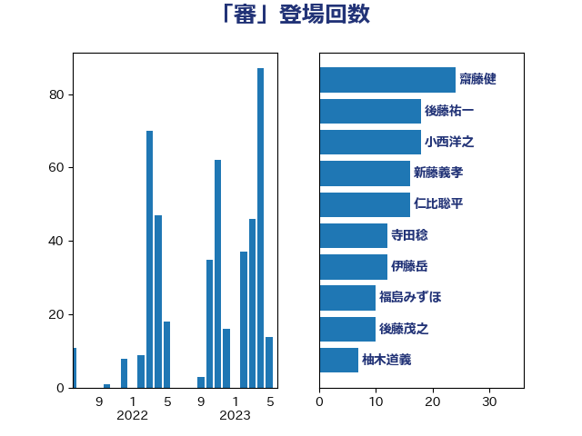

単語「審」

| 齋藤健 | 自由民主党 | 24 回 |
| 後藤祐一 | 立憲民主党 | 18 回 |
| 小西洋之 | 立憲民主党 | 18 回 |
| 新藤義孝 | 自由民主党 | 16 回 |
| 仁比聡平 | 日本共産党 | 16 回 |
| 寺田稔 | 自由民主党 | 12 回 |
| 伊藤岳 | 日本共産党 | 12 回 |
| 福島みずほ | 社会民主党 | 10 回 |
| 後藤茂之 | 自由民主党 | 10 回 |
| 柚木道義 | 立憲民主党 | 7 回 |
| 足立康史 | 日本維新の会 | 5 回 |
| 米山隆一 | 立憲民主党 | 5 回 |
| 稲津久 | 公明党 | 5 回 |
| 塩崎彰久 | 自由民主党 | 5 回 |
| 古庄玄知 | 自由民主党 | 5 回 |
| 馬場伸幸 | 日本維新の会 | 4 回 |
| 鎌田さゆり | 立憲民主党 | 4 回 |
| 岸田文雄 | 自由民主党 | 4 回 |
| 山田勝彦 | 立憲民主党 | 4 回 |
| 宮本徹 | 日本共産党 | 4 回 |
| 古川禎久 | 自由民主党 | 4 回 |
| 加藤勝信 | 自由民主党 | 4 回 |
| 伊東信久 | 日本維新の会 | 4 回 |
| 下村博文 | 自由民主党 | 4 回 |
| 鈴木義弘 | 国民民主党 | 3 回 |
| 本田太郎 | 自由民主党 | 3 回 |
| 小泉進次郎 | 自由民主党 | 3 回 |
| 宮崎政久 | 自由民主党 | 3 回 |
| 塩村あやか | 立憲民主党 | 3 回 |
| 國重徹 | 公明党 | 3 回 |
| 中島克仁 | 立憲民主党 | 3 回 |
| 階猛 | 立憲民主党 | 2 回 |
| 阿部弘樹 | 日本維新の会 | 2 回 |
| 長谷川淳二 | 自由民主党 | 2 回 |
| 福島伸享 | 無所属 | 2 回 |
| 神谷裕 | 立憲民主党 | 2 回 |
| 石橋通宏 | 立憲民主党 | 2 回 |
| 石井章 | 日本維新の会 | 2 回 |
| 田村貴昭 | 日本共産党 | 2 回 |
| 杉尾秀哉 | 立憲民主党 | 2 回 |
| 岸真紀子 | 立憲民主党 | 2 回 |
| 山添拓 | 日本共産党 | 2 回 |
| 山本順三 | 自由民主党 | 2 回 |
| 山本剛正 | 日本維新の会 | 2 回 |
| 山下芳生 | 日本共産党 | 2 回 |
| 安江伸夫 | 公明党 | 2 回 |
| 友納理緒 | 自由民主党 | 2 回 |
| 高橋千鶴子 | 日本共産党 | 1 回 |
| 長浜博行 | 無所属 | 1 回 |
| 野村哲郎 | 自由民主党 | 1 回 |
| 野上浩太郎 | 自由民主党 | 1 回 |
| 谷田川元 | 立憲民主党 | 1 回 |
| 西村智奈美 | 立憲民主党 | 1 回 |
| 西村康稔 | 自由民主党 | 1 回 |
| 舞立昇治 | 自由民主党 | 1 回 |
| 空本誠喜 | 日本維新の会 | 1 回 |
| 福山哲郎 | 立憲民主党 | 1 回 |
| 石川昭政 | 自由民主党 | 1 回 |
| 石川大我 | 立憲民主党 | 1 回 |
| 石垣のりこ | 立憲民主党 | 1 回 |
| 田村憲久 | 自由民主党 | 1 回 |
| 田村まみ | 国民民主党 | 1 回 |
| 玉木雄一郎 | 国民民主党 | 1 回 |
| 牧義夫 | 立憲民主党 | 1 回 |
| 牧山ひろえ | 立憲民主党 | 1 回 |
| 清水貴之 | 日本維新の会 | 1 回 |
| 水岡俊一 | 立憲民主党 | 1 回 |
| 梅村みずほ | 日本維新の会 | 1 回 |
| 柴田巧 | 日本維新の会 | 1 回 |
| 林芳正 | 自由民主党 | 1 回 |
| 松川るい | 自由民主党 | 1 回 |
| 早稲田ゆき | 立憲民主党 | 1 回 |
| 斎藤洋明 | 自由民主党 | 1 回 |
| 斉藤鉄夫 | 公明党 | 1 回 |
| 川田龍平 | 立憲民主党 | 1 回 |
| 山本香苗 | 公明党 | 1 回 |
| 山下雄平 | 自由民主党 | 1 回 |
| 小林鷹之 | 自由民主党 | 1 回 |
| 宮本岳志 | 日本共産党 | 1 回 |
| 奥野総一郎 | 立憲民主党 | 1 回 |
| 天畠大輔 | れいわ新選組 | 1 回 |
| 城井崇 | 立憲民主党 | 1 回 |
| 吉田はるみ | 立憲民主党 | 1 回 |
| 勝俣孝明 | 自由民主党 | 1 回 |
| 前川清成 | 日本維新の会 | 1 回 |
| 倉林明子 | 日本共産党 | 1 回 |